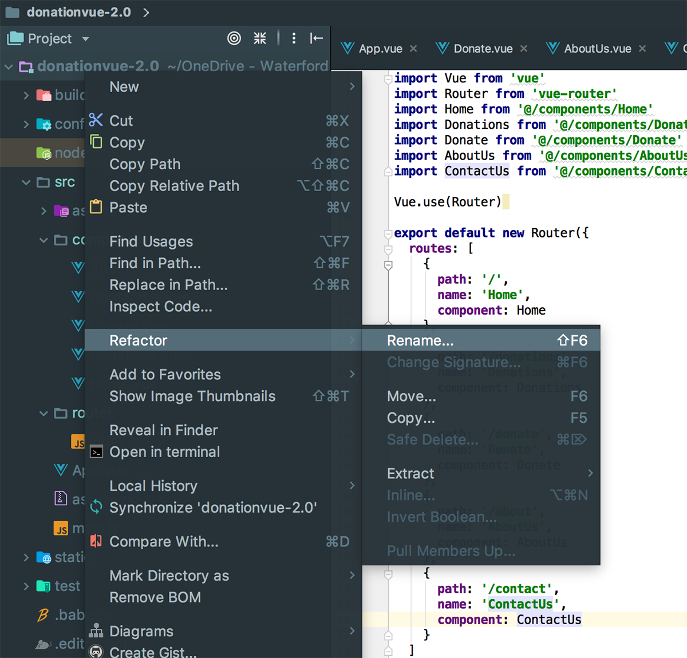
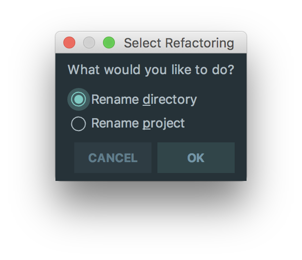
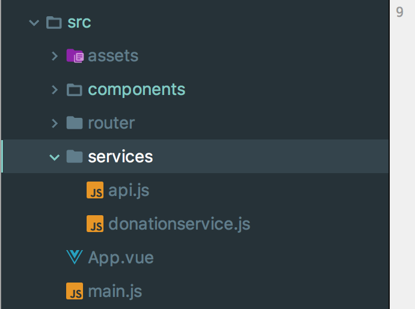
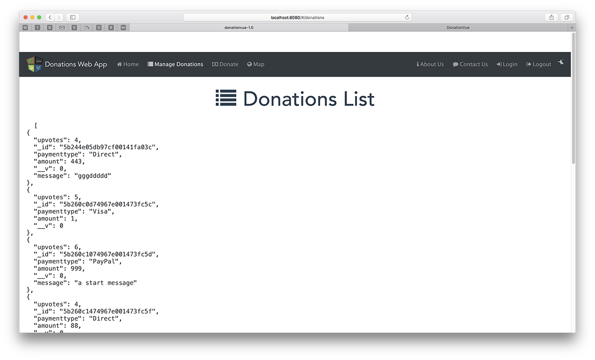
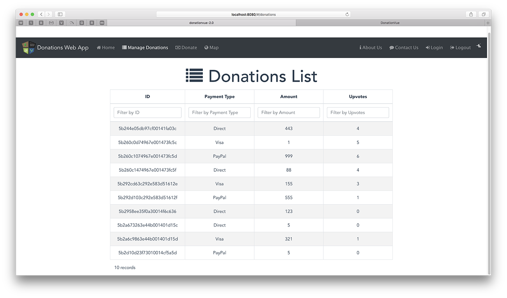
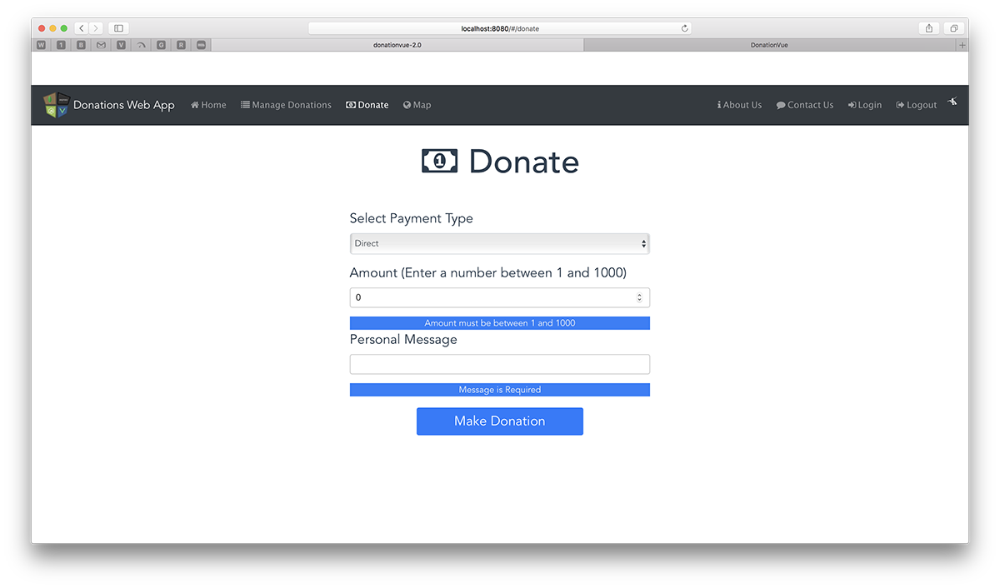

This lab involves adding some actual functionality to our Vue Web App - DonationVue-2.0 with the ability to List and add Donations.
In this lab we'll add the ability to make a Donation and list all the Donations via our Restful API (our Node Server).
You can have a look at this version of the app in action on the YouTube Channel here
In this Lab, you will be required to build the next version of our Vue Client Web App, called DonationVue-2.0. We will build on the previous lab, so you can either use your own version of DonationVue-1.0 or download the starter code here. In this version we will be updating some of our components to introduce functionality into our Web App.
On completion of this lab you'll be able to
First thing you should do is download the starter code (or the solution to the previous lab) here and then extract it to your single parent folder for all your web app projects you created for the previous labs - don't forget to run
npm installto install all the necessary dependencies.
It's not vital, but you should probably rename the directory and project for your final version of DonationVue if you want to keep different versions of your app.


Before beginning any refactoring it's probably worth running the App, just to confirm it launches correctly.
The rest of the lab involves adding functionality to allow the user to
With any application that will be listing some data it's always a good idea to get the 'Display/list/View All' option implemented first, if for no other reason, to confirm that what you have in the 'app' can be viewed in the 'app' and that you can confirm your 'add' works pretty much instantly.
So the first feature we'll implement is our 'View All Donations' and list our 'donations' we have stored on the Server (in the mongodb database). We'll do this in 2 stages
First of all we need to install a few dependencies to make this process a little easier, namely
so go ahead and install those via WebStorm (or the CL if you prefer).
Now, to try and improve our overall design we're going to wrap our axios calls in a separate javascript file so create a new folder called 'services' in the 'src' directory. Then create 2 javascript files 'api.js' and 'donationservice.js' like so

Inside 'api.js' place the following
import axios from 'axios'
export default() => {
return axios.create({
baseURL: 'http://localhost:3000/'
})
}and inside 'donationservice.js' place
import Api from '@/services/api'
export default {
fetchDonations () {
return Api().get('/donations')
}
}In your 'Donations' component (Donations.vue) add the following to the script tag section
this import immediately after the script tag
import DonationService from '@/services/DonationService'this inside your 'data()' function
donations: [],
errors: []and finally this after your 'data()' function
// Fetches Donations when the component is created.
created () {
this.loadDonations()
},
methods: {
loadDonations: function () {
DonationService.fetchDonations()
.then(response => {
// JSON responses are automatically parsed.
this.donations = response.data
console.log(this.donations)
})
.catch(error => {
this.errors.push(error)
console.log(error)
})
}
}so, for reference, your updated script content looks like this
import DonationService from '@/services/DonationService'
export default {
name: 'Donations',
data () {
return {
messagetitle: ' Donations List ',
donations: [],
errors: []
}
},
// Fetches Donations when the component is created.
created () {
this.loadDonations()
},
methods: {
loadDonations: function () {
DonationService.fetchDonations()
.then(response => {
// JSON responses are automatically parsed.
this.donations = response.data
console.log(this.donations)
})
.catch(error => {
this.errors.push(error)
console.log(error)
})
}
}
}Be sure you understand what's going on here as you'll be adding to these files later on.
We want to initially display the records (just so we know it works) on our page in basic JSON format so have a go at something along the lines of the following

NOTE ON POSSIBLE *CORS* ERROR |
|---|
If you get a CORS error then you'll need to 1. revisit your Node Server 2. install and require the cors module and then 3. app.use(cors()) in your app.js |
ALSO - If you have been 'stringifying' your JSON on your server i.e. calling JSON.stringfy(), this returns a string NOT a JSON ARRAY (which your Vue Client Expects) so you'll need to remove this and just send back the raw data in your result to avoid a wrong type expected error when trying to display your data in your Vue table
Once we have requested our JSON donation data the next step is to display them properly in a table, specifically a v-client-table so first we need to add another dependency vue-tables-2 (NOT vue-tables) - do that now.
In your 'Donations.vue', add the following
import Vue from 'vue'
import VueTables from 'vue-tables-2'
Vue.use(VueTables.ClientTable, {compileTemplates: true, filterByColumn: true})to give us access to the VueTables reusable component.
Next, we need to specify some properties and 'options' of our table inside our 'data()' function, so add the following
columns: ['_id', 'paymenttype', 'amount', 'upvotes'],
options: {
headings: {
_id: 'ID',
paymenttype: 'Payment Type',
amount: 'Amount',
upvotes: 'Upvotes'
}
}for reference
data () {
return {
messagetitle: ' Donations List ',
donations: [],
errors: [],
columns: ['_id', 'paymenttype', 'amount', 'upvotes'],
options: {
headings: {
_id: 'ID',
paymenttype: 'Payment Type',
amount: 'Amount',
upvotes: 'Upvotes'
}
}
}
}Add the following style attribute
#app1 {
width: 60%;
margin: 0 auto;
}and finally, our table, inside the template (so replace the basic JSON)
<div id="app1">
<v-client-table :columns="columns" :data="donations" :options="options">
</v-client-table>
</div>Note the properties of our table and how they correspond to the data() properties
If all goes to plan, when you reload your app you should get

Pretty Cool if I do say so myself !!
You can even filter on each individual column - by default !!
We'll revisit this table again to add in extra features and customisation, but for the moment, let's move on to adding a donation - the next step.
So now that we can display a list of the donations currently on the server, the second feature we'll implement is our 'Donate' option where the user can choose an amount, a payment type and optionally, a message. Before we start, we need to install a few more dependencies, namely,
so do that now.
Next, edit your Donate component and 'use' the following (you may need to import the relevant dependencies)
Vue.use(VueForm, {
inputClasses: {
valid: 'form-control-success',
invalid: 'form-control-danger'
}
})
Vue.use(Vuelidate)
Vue.use(VueSweetalert)There's a bit more work involved to get this feature implemented, so the first thing we'll do is write the function to allow us to add a donation to our list (stored on the server).
Open up your donationservice.js and add the following
postDonation (donation) {
return Api().post('/donations', donation,
{ headers: {'Content-type': 'application/json'} })
}Then in your Donate component add the following to the 'data()' function
message: '',
paymenttype: 'Direct',
amount: 0,
upvotes: 0,
donation: {}and this function, to the methods: section of your Component
submitDonation: function (donation) {
DonationService.postDonation(donation)
.then(response => {
// JSON responses are automatically parsed.
console.log(response)
})
.catch(error => {
this.errors.push(error)
console.log(error)
})
}and fix any import errors.
Now we need to add the relevant scripting for validating our form data, so begin by adding the following import
import { required, minLength, between } from 'vuelidate/lib/validators'add the following to your 'data()'
submitStatus: nulladd the following validations: to your export
validations: {
message: {
required,
minLength: minLength(5)
},
amount: {
required,
between: between(1, 1000)
}
},and add the following to your methods: section inside your Donate Component
submit () {
console.log('submit!')
this.$v.$touch()
if (this.$v.$invalid) {
this.submitStatus = 'ERROR'
} else {
// do your submit logic here
this.submitStatus = 'PENDING'
setTimeout(() => {
this.submitStatus = 'OK'
var donation = {
paymenttype: this.paymenttype,
amount: this.amount,
upvotes: this.upvotes,
message: this.message
}
this.donation = donation
this.submitDonation(this.donation)
}, 500)
}
}Finally, we need to add the actual form to accept the data from the user. So inside your 'template' add the following
<form @submit.prevent="submit">
<div class="form-group">
<label class="form-label">Select Payment Type</label>
<select id="paymenttype" name="paymenttype" class="form-control" type="text" v-model="paymenttype">
<option value="null" selected disabled hidden>Choose Payment Type</option>
<option value="Direct">Direct</option>
<option value="PayPal">PayPal</option>
<option value="Visa">Visa</option>
</select>
</div>
<div class="form-group" :class="{ 'form-group--error': $v.amount.$error }">
<label class="form-control-label" name="amount">Amount (Enter a number between 1 and 1000)</label>
<input class="form__input" type="number" v-model.trim="amount"/>
</div>
<div class="error" v-if="!$v.amount.between">Amount must be between 1 and 1000</div>
<div class="form-group" :class="{ 'form-group--error': $v.message.$error }">
<label class="form__label">Personal Message</label>
<input class="form__input" v-model.trim="$v.message.$model"/>
</div>
<div class="error" v-if="!$v.message.required">Message is Required</div>
<div class="error" v-if="!$v.message.minLength">Message must have at least {{$v.message.$params.minLength.min}} letters.</div>
<p>
<button class="btn btn-primary btn1" type="submit" :disabled="submitStatus === 'PENDING'">Make Donation</button>
</p>
<p class="typo__p" v-if="submitStatus === 'OK'">Thanks for your Donation!</p>
<p class="typo__p" v-if="submitStatus === 'ERROR'">Please Fill in the Form Correctly.</p>
<p class="typo__p" v-if="submitStatus === 'PENDING'">Donating...</p>
</form>and add this to your styles
#app1 {
width: 95%;
margin: 0 auto;
}
.required-field > label::after {
content: '*';
color: red;
margin-left: 0.25rem;
}
.donate-form .form-control-label.text-left{
text-align: left;
}
label {
display: inline-block;
width: 540px;
text-align: left;
font-size: x-large;
}
.typo__p {
width: 540px;
font-size: x-large;
}
.btn1 {
width: 300px;
font-size: x-large;
}
p {
margin-top: 20px;
}
input {
border: 1px solid silver;
border-radius: 4px;
background: white;
padding: 5px 10px;
width: 540px;
}
.dirty {
border-color: #5A5;
background: #EFE;
}
.dirty:focus {
outline-color: #8E8;
}
.error {
border-color: red;
background: #157ffb;
color: whitesmoke;
}
.error:focus {
outline-color: #ffa519;
}We'll go through exactly what's going on here during the lab (if we haven't covered it in the lectures already)
And we'll eventually revisit this component, and refactor it to be reusable for our Edit feature.
But if all goes as planned, your 'Donate' screen will look like this

and you should be able to make donations to your server.
You can find the solution to this lab here.